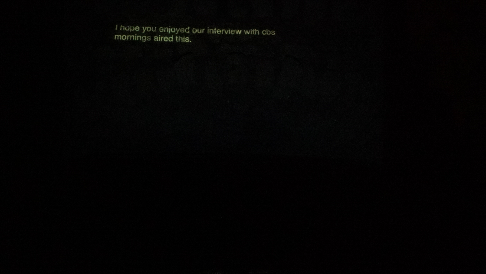

Mantiche
Residency: Phonè 2022 - Maul

Mantiche is an audio-video project that seeks to explore the relationship between technology and human experienc by using social media and generative technology.
The Markov chain technology used to mix and reorder tweets in the video component of Mantiche adds a layer of complexity to our overall exprerience with social media. By taking existing text and rearranging them, the installation challenges our preconceived notions of language and meaning. The resulting sequence of tweets is often surreal, yet surprisingly coherent, forcing viewers to confront the ways in which technology can manipulate our perception of reality.
Meanwhile, the ethereal audio track created by Marco Caricola further enhances the immersivity of the installation. By pairing the disorienting visuals with an otherworldly soundscape, Mantiche creates an experience that is both disconcerting and captivating.